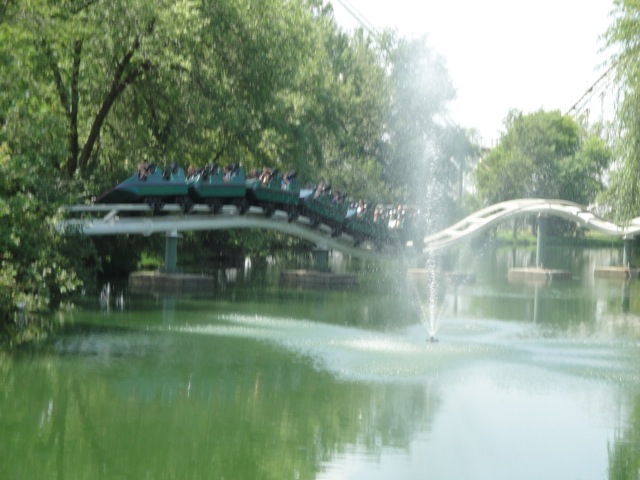

| |

Dragon Review

For todays review, we're going to travel back in time to Adventureland in August 2010, where we'll be reviewing one of the worst coasters ever built, Dragon. Now looking at Dragon, you think "What!? Worst coaster ever!? How!? What the hell are you smoking to say that!!? The back to back loops should provide a lot of force while the helixes should provide a lot of laterals! This looks pretty cool!" And while the ride does look like a really good looking Schwarzkoph coaster, and really blended right into Adventureland, keep in mind that these are just looks. In reality, this ride raped your mind, scarred you for life, and tried to fracture your skull. Yes, it really was THAT BAD!!! Hope you packed some advil with you and make sure you have your blanket with you in your hotel room on your time travel journey cause thing is going to give you some of the worst nightmares you will ever experience in your entire life. Anyways, you first started off sitting in the seats and pulled down the OTSRs. They were pretty damn hard and didn't have much padding on them. Just in case you thought the harnesses would help ease the pain. We exited out of the station and the pain begins. First we went through a couple of preshow bumps, sort of similar to a Wacky Worm. So surely, at least this part was smooth. WRONG!!! YOU GOT THE LIVING SH*T BEATEN OUT OF YOU EVEN HERE!!!! It seriously is mind boggling how such simple and harmless and boring elements could cause the pain of a really bad SLC. And if this wasn't bad already, just imagine the pain at full speed. Yeah. Ouch. Anyways, we then began to climb the lifthill. It provided you with a lovely view of Adventureland, as well as corn. But you can't think about corn right now. You're about to freaking die!! We then crested the lifthill, SMACKED to the right, and before we know it, we're heading down the first drop. I think we picked up speed, but all I noticed was that the seat was vibrating. And not in a good carnival foot massage way. Like in a "This is made with chewing gum" way. And of course, the headbanging begins. We then head through the two loops. I just noticed that the ride was doing a drumroll, and my head was the drum!! You couls watch the corn from upsidedown twice all while screaming "Ow Ow Ow Ow Ow Ow Ow Ow Ow Ow Ow Ow Ow Ow Ow Ow Ow Ow!!!" After the loop, we headed into the first helix, which brings us to our first SMACK!!!!!! You smacked that restraint hard and good. However, instead of being able to nurse your possibly fractured skull, the restraint just vibrated against your skull, which didn't help it at all and overall, just helped make for a bigger headache. Then we went into helix #2. SMACK!!! Now the other side of your skull was in pain. The restraint then continued to vibrate to make your headache even worse. However, hope was here. I could see the brake run! Oh joy! Run!! Run towards the end!! However, before we could reach the end, we had to go through a slught, in which Dragon totally bitchslaped us in a way to tell us that she has won. But whatever. It's over!! It's all over!! The horribleness of Dragon is now over. And I mean that permanently now that the ride is demolished and all that's left are the loops for theming and scenary (That's a weird trend. Using old demolished coaster parts and converting them into sculptures). I think they had a house of mirrors in the exit, which would have been awesome. Though I'm pretty sure all those mirrors were the result of a hallucination caused by the brain damage Dragon gave you. But seriously, that was one of the worst coasters ever ridden by Incrediblecoasters (And hopefully one of the worst coasters in the world). I'm SO GLAD that Adventureland decided to demolish Dragon and replace it with an S&S Free Spin. Now, having it go crazy like Arashi is always preferred. But that's not necesarry! That thing can run a HORRIBLE program, barely flip, be the worst S&S Free Spin, and even make post-neuteredGreen Lantern (Oops. I mean Le Vipere) look intense and good in comparison! And it will STILL be an improvement over the piece of sh*t that was Dragon! Ding Dong! The peice of sh*t is gone!
1/10
Location: Adventureland
Opened: 1991
Died: September 29, 2019
Built by: O.D Hopkins
Last Ridden: August 6, 2010
Dragon Photos




Home
|